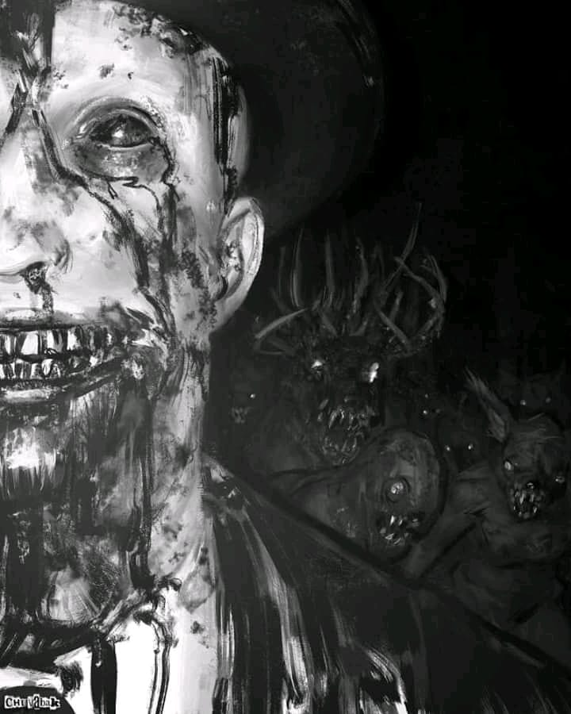

I’ll never forget the first time I saw it. Never forget when the nightmare that haunted me for so long began. It was the summer of 2008. The days were hot, and the nights warm. I was attending high school, and had a full time job, meaning that free time hardly existed. With a plate that full, it was hard not to experience stress, some days more than others. I thought that maybe this “stress” had contributed to what had happened but that is hard to believe. I know that reading this, you may be thinking this is just another scary story, the internet is littered with them, why waste my time? I don’t blame you for feeling this way, however I hope you read this, being that what you are about to read is one hundred percent real. The events of which I am writing actually happened and I need to know if anyone out there has experienced this.
I was seventeen years old and I lived with my grandparents in a lesser populated area of Utah. My dog, now in the elder stages of his life, was just out of puppyhood at the time. Having a dog really helped with the feeling of loneliness I sometimes felt there. I took the biggest of three bedrooms in the basement, the others would remain as vacant guest rooms. The nights were quiet and dark without the noise of vehicles passing by, headlights flashing through the window. It was truly isolated. Every now and then, the sound of a hungry coyote would penetrate the quiet, causing the few neighborhood dogs to bark in a frenzy. It was dark and quiet, the perfect environment for the nightmare lurking within.
It was late, probably close to one in the morning, which was usually the time I decided to turn in for the night. I always referred to myself as a night owl, being that sleeping before midnight was not a regular occurrence. The room in which I occupied was set up in such a way that a light switch was positioned conveniently next to the bed, meaning I didn’t have to walk across the abnormally large space to kill the lights. I made sure I was comfortable, positioning the pillow to the perfect spot, then reached over and clicked the switch. I watched as the lights slowly faded, allowing the dark to take over. As with most nights, sleep didn’t come quickly. It took its time while I lied there, exploring the corners of my thoughts, dwelling on things said and done.
Until recently, I didn’t mind that my bedroom or closet doors remain open while I slept, honestly didn’t think about it. This particular night, my closet door was open, but only a few inches. The lack of light from within the closet made it appear immensely black in comparison to the dark from the room, almost like an endless void. My eyes were drawn to it and as hard as I tried, I couldn’t look away. From within the void, something started to appear, slowly wrapping around the door. It didn’t take long for me to realize what I was looking at. A long slender hand with lengthy crooked fingers made itself visible, and in that moment it seemed like the breath was stolen right from my lungs. It is hard to describe how I felt as I lie there staring at the hand, tightly gripping my door. A feeling somewhere between fear and pure panic. The hand remained there for what seemed like hours until the door started opening inwards into the lightless pit. When opened slowly, this particular door would let out a scratching noise while it scraped the top of the frame, and being that all other noises had ceased, the creaking was drawn out and deafening. All at once the door stopped its inward descent, not quite reaching the full open position. The hand that had tugged the door retreated back into the closet. I lied there staring, just waiting for whatever occupied that otherwise empty space to emerge, but to my surprise, nothing did.
I jolted awake to the sound of my alarm. The time was 6:45 A.M. and before I even attempted to turn off the alarm, I sat up and stared at the closet, and to my shock the door rested in the exact position as to which it had been opened. Did I have a nightmare? As I ran through the events of the night before, the alarm seemed to grow distant as if I was moving away from it. I snapped back, turned off the alarm and walked to the closet. I flipped on the light inside and looked around. It was a large walk in closet with two doors accessing it, and other than clothes and some spare blankets, it was completely empty. I didn’t have time to think about it, just grabbed what I needed and closed the door.
I can’t recall how many nights passed until it appeared again, I really wasn’t expecting it to. I shut the closet completely after the first night, thinking that a draft could have caused the closet to open. I played it off as a nightmare, like it would never happen again, but something still didn’t feel right. It is hard to explain really, every time I have a dream, I wake up knowing it’s a dream. Not a doubt in my mind, but this, this was different. It seemed so real, so vivid. I didn’t want to dwell on it but found myself unable to focus on anything else. I thought to myself, “It was a dream, you won’t ever see it again”. I rolled over and flipped off the lights preparing to sleep, unaware of the horrors I would soon endure.
I was lying down, with my back towards the closet, when I heard the handle move and click as it released from the closed position, creaking loudly as it opened. In this moment the appropriate response would have been to quickly turn around and flip on the lights but I couldn’t move. Instead of panicking, I tiredly rolled over to look at the closet, lying flat on my back. The door was open but only a sliver, allowing the void to reveal itself once again. The hand reached out, gracefully pulling the door inwards again, this time not quite as far. Once open, the hand retreated back but what followed was worse. This night was darker than most, storm clouds littered the sky, limiting the light from the moon. Even though the blinds were open, not much light came through, making it harder to see. The visitor was leaning out of the closet, resting on the left side of the door frame, its left hand crossing in front of its body, resting on the wall. Its arm was shockingly long and very thin, giving it a very malnourished look. Because of the poor lighting, its face was not visible above its mouth which was resting in an open grin, revealing sharp crooked teeth. It had long wispy hair that hung down at shoulder length and appeared to be white. Resting on its head was a top hat that was tattered and well worn. The sight of this thing alone would cause anyone to scream in fright while scrambling for the light, however I remained paralyzed. I was frightened beyond belief, but unable to react, almost as if I was in a trance. I lied there, staring at the visitor as it stared back at me. Neither of us moved nor said anything, the only noise coming from my breathing. Although there was no exchanging of words, its intent appeared malicious. I cannot remember how long this lasted but the next thing I remember is the sound of my alarm going off, ripping me from sleep. The first thing I noticed of course was the open closet.
I know you may be thinking that I was dreaming, therefore it couldn’t be real. Maybe I was sleep walking and opening the closet before going back to bed. I don’t blame you, that thought had crossed my mind as well. I have exhausted every logical explanation over and over again, however after these two occurrences, I knew what I was facing was real. This entity was visiting me during the night. It was horrifying, and the worst part was the fact that I didn’t know how to get rid of it, or where it came from.
My dog slept in the exact same spot every night, right at the foot of my bed. He was an abnormally heavy sleeper and not much would wake him, but that changed quickly as the nights passed. It had been a pretty absent couple of nights, as the visitor remained hidden, but not for long. It was winter now, summer having come and gone. The closet was always bitter cold due to the lack of insulation inside. I had the door closed of course, keeping my room warm, but also giving the impression that my dog and I were the only residents occupying it. I was riding that fine line of sleep, preparing for the last of my consciousness to drift, only to be disturbed by a deep growl coming from my dog, deep within his chest. I looked down the bed to find him fixated on the closet door, now open, letting out a stream of cold, crisp wintery air. This visit was different from the others in that the hand never reached out. Instead, the silence was broken by a light scratching noise from inside the door, causing my dog to stand straight up, growling louder. After a few minutes, the scratching stopped and my dog lied down hesitantly, still staring at the door. It was dead quiet now. This next occurrence gives me chills thinking about it, even now as I write this, the dread begins to creep up my spine. I slowly stepped out of bed, feeling the cold grip at my legs, and headed towards the door to close it. I approached carefully, reaching towards the handle when suddenly the cold came to a halt. Something was blocking the current. I looked into the opening to see the smile of the visitor, the little light coming from the window reflecting off its teeth. I was paralyzed in fear, my arm outstretched towards the handle, eyes focused on this nightmarish silhouette. The visitor stood there, breathing through that small line that separated us. I was so close, it could easily reach out and drag me into whatever hell it came from. I quickly grabbed the handle, slammed the door shut and flicked the lights on, still staring at the closet. Needless to say, not much sleep followed, and the lights did stay on until the sun streamed through the clouds.
After that night, the terror that I felt was in overdrive. I would even say that paranoia kicked in. I would dig through my closet in broad daylight, finding nothing out of the ordinary. I decided that for the next little while the closet lights would remain on and the door would remain all the way open, exposing its contents. Nothing would take me by surprise if I could see the closet the whole time. It seemed the best option at the time, almost foolproof and I believed it would end these erratic intrusions. As with my previous assumption, I was horribly incorrect.
The next visit came shortly after the previous one. The closet door was open and the light stretched out into the room, touching the edge of the bed as it had done the past couple nights. I had fallen asleep earlier than normal due to my sleeplessness. My alarm was set and my dog was fast asleep. I can’t quite remember what caused my sudden awakening, possibly a dream in which I had fallen down, but I found myself in a sitting position in the pitch black. The closet light was no longer glowing but the door remained open. My heart began pounding in my chest. My plan had failed and I was once again in the midst of this visitor. I peered into the closet, now completely black except for the outline of the tall, slender entity standing dead center. Its height shocked me, as I had only seen it hunched against the door frame. It appeared to stand at least 7 feet tall. It stood still, and from what I could tell it was facing me. I sat there in complete silence, then peered towards the end of the bed where my dog lied sound asleep. I diverted my eyes back to the closet only to find the figure gone. Panic swept through me as my eyes darted around the room looking for this visitor, who prior had never left the confines of the closet. Nothing. I felt a wrenching in my stomach as I realized the last place I hadn’t checked was the last place I wanted to check. I slowly leaned over the edge of the bed, rolling onto my stomach and lowering the top half of my body towards the floor until I could see under the bed. I used this space as storage, which I am sure most people do, which blocked my view to the other side. I couldn’t see anything and that made my panic subside slightly, but not seeing it still meant it was somewhere. Then I heard it. The closet door creaked behind me. I shot back up faster than I thought humanly possible, waking up my sleeping dog and knocking my pillow to the floor. I looked into the closet to find the visitor standing in the center of the doorway once more, just breathing. I jumped as my dog started barking at the unwelcome guest. Before I had time to react, the visitor quickly grabbed the door and slammed it shut. I reached over and flicked on the lights. I opened the closet and turned on the lights to find nothing. It was gone. I couldn’t take it anymore. I needed to sleep undisturbed.
The next morning, I decided to move rooms. Leaving the extra space wasn’t ideal, but I needed to sleep. School was difficult as is without the burden of heavy eyelids weighing me down. The move only took a couple hours to complete being that I didn’t have much to move other than clothes and some smaller furniture. Every time I stepped into the newly vacant room, I looked at the closet feeling helpless. I was hoping with every fiber of my being that this move would work but I had my doubts. What would prevent this visitor from following? The new closet was much smaller but still big enough to have something lurk inside. I packed it full of clothing and shoeboxes, hoping that the more I put in, the fewer the chances it would attempt to follow. I was running out of ideas and this entity was more daring as each night passed.
That evening as I was preparing to turn in for the night, I headed over to my new closet and had one last look inside. I knew this was ridiculous, checking my closet for monsters or whatever the hell this thing was, but given what I had been through, it seemed justified. Nothing out of the normal. Of course the only denizens were my shirts and shoes. I let out a deep breath, hoping that I could for once get a full night of rest. I crawled into the sheets, and reached over to flip off the deskside lamp. No light switch close to the bed in this room. The lamp died quickly with a sharp click, transitioning immediately from light to black. I lied there for several minutes trying to adjust to the new bed, my dog doing the same at the foot. Once we both settled, silence lingered. In less than an hour, I was asleep, soundly for once.
Dreams have a tendency to blend fiction with reality, especially when it comes to sound. I shot awake to the sound of a door slamming in the distance. I sat up thinking that I had just dreamt of the sound, but shortly after, it came again. There was no mistaking where it was coming from. I turned on the lamp and waited for my eyes to adjust and once more heard the slam of a door. I stepped out of bed, commanded my dog to stay, and opened the door to the family room. I looked around the corner towards my old room but couldn’t see it in the dark. I flipped the lights on and walked quickly towards my old living space. The door was open but the closet closed. I turned on the lights and stepped into the room, ready to head to the closet when I heard a series of loud crashes from inside. I froze in place, waiting for the noises to cease. Once the quiet returned, I rushed to the closet and swung the door open. The bars that were used to support the coat hangers, and the coat hangers themselves, littered the floor, having been ripped from the walls. The extra blankets and boxes stored inside were all scattered in disarray, an act of anger no doubt. I picked up most of the mess, leaving the rest for the next day. I closed the closet and bedroom doors and headed back to my room cautiously. The rest of the night was quiet.
This “visitor” never appeared again, other than in my head. It left as quickly as it came, without any reason. To this day I still cannot understand why it latched on to me. I never figured out its intentions. I have talked to others about it, and always get the same responses. “Maybe you were just dreaming” or “Maybe your stress was getting to you”. Whatever the reason, I am glad it is gone. It never made an attempt to hurt me, just seemed to linger. I was frightened of course, I think anyone would be in this predicament. Even though nothing happened to me, it appeared sinister in nature. To this day I catch myself thinking about it, especially at night when I have a hard time drifting to sleep, quickly catching a peek at my closet door. Sometimes I imagine it standing there and what I would do, how I would react. I imagine it speaking to me but not knowing what it would say. I think about how easily it could have attacked me. I just wish I had answers.
I hope no one else has seen this visitor, but if you have, I hope you were as lucky as I was to get through it unscathed. This has made me more aware. Growing up I was always told “There is nothing in the dark, that isn’t there in the light” but I don’t believe that. I have seen what the dark holds, and I am sure it is still out there. Maybe more than one. If you ever hear or see anything in the dead of night, please do not disregard it. This visitor could be hiding out, preparing for something sinister. If your child says they have a monster in the closet, they are not imagining it. Take the time to look, it could save their life.